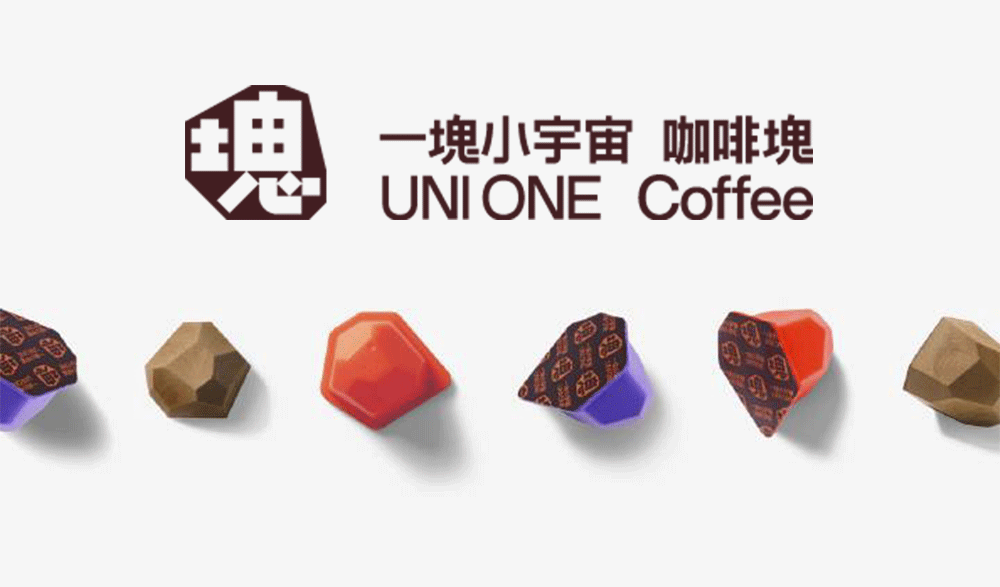

社群企劃｜2024 - 2025
一塊小宇宙
以 Z 世代的成長情境切入，透過短影音內容與 KOC 合作，讓凍乾咖啡從機能型產品轉化為日常生活中的「咖啡成人式」。
專案背景
一塊小宇宙希望提升 Z 世代對凍乾咖啡的品牌認知，讓產品不只被視為提神工具，也能貼近大學生面對學業、工作與獨立生活時的日常選擇。
挑戰
品牌在年輕族群中的知名度與曝光度不足，目標受眾對凍乾咖啡的理解也有限，因此需要以易於共鳴的內容降低理解門檻，同時創造互動與體驗。
策略
團隊將溝通主軸設定為「咖啡成人式」，把喝咖啡從單純提神，轉化為 Z 世代在成長與轉大人時刻的生活儀式；並以 Instagram Reels 與創作者的生活情境作為主要擴散形式。
執行內容
受眾洞察鎖定 18 至 24 歲的大學生與初入職場族群，整理生活壓力、咖啡使用情境與社群內容偏好。
KOC 合作規劃蒐集符合年輕生活風格與品牌調性的創作者名單，規劃合作內容方向。
短影音企劃以成長、生活儀式與提神需求為切角，協助團隊規劃 Reels 與社群素材。
成果
結案報告中的 KOC 合作影片皆超過原定觀看目標，顯示生活化內容與創作者合作有助於擴大年輕受眾的品牌曝光。
最高觀看20,977觀看次數
最高達成率333.3%觀看目標達成
單支案例14,695觀看次數
單支案例183.7%觀看目標達成
社群內容成效
以下數據整理自結案報告；完整貼文與影片可於十光跡整合行銷團隊粉專查看。
品牌短影音成效
變成大人 WOO3,099 次觀看202 個讚｜觸及 1,014 帳號目標達成 299.4%
選舉你投哪一咖3,841 次觀看220 個讚｜16 則留言目標達成 384.1%
KOC 合作成效
允熊 Aya20,977 次觀看564 個讚｜864 次互動目標達成 209.8%
楊士賢16,667 次觀看521 個讚｜觸及 8,490 帳號目標達成 333.3%
UNI14,695 次觀看527 個讚｜觸及 7,452 帳號目標達成 183.7%
魚肉7,820 次觀看361 個讚｜觸及 4,332 帳號目標達成 156.4%
貼文成效
酸酸甜甜愛上你2,994 次觀看204 個讚｜觸及 1,126 帳號目標達成 299.4%
此時此刻，就享再一塊1,336 次觀看35 個讚｜觸及 760 帳號目標達成 133.6%
你是哪種咖2,607 次觀看86 個讚｜觸及 1,283 帳號目標達成 521.4%
學習與反思
這次專案讓我理解，行銷企劃不能只停留在創意發想，也需要在提案前更仔細確認活動機制、執行資源與成效定義，避免進入執行後才大幅調整方向。
- 提案前應先演練活動流程與執行情境，確認企劃內容能被實際落地。
- 與業主討論成效目標時，需要先對齊指標定義，例如粉絲成長來自廣告投放或活動自然轉換，兩者的預期速度與可控性不同。
- 未來設定目標客群時，會更重視行為特徵與產品接受度，而不只以年齡切分；例如低涉入、無明顯品牌忠誠的咖啡消費者，可能比高度咖啡愛好者更適合作為凍乾咖啡的溝通對象。